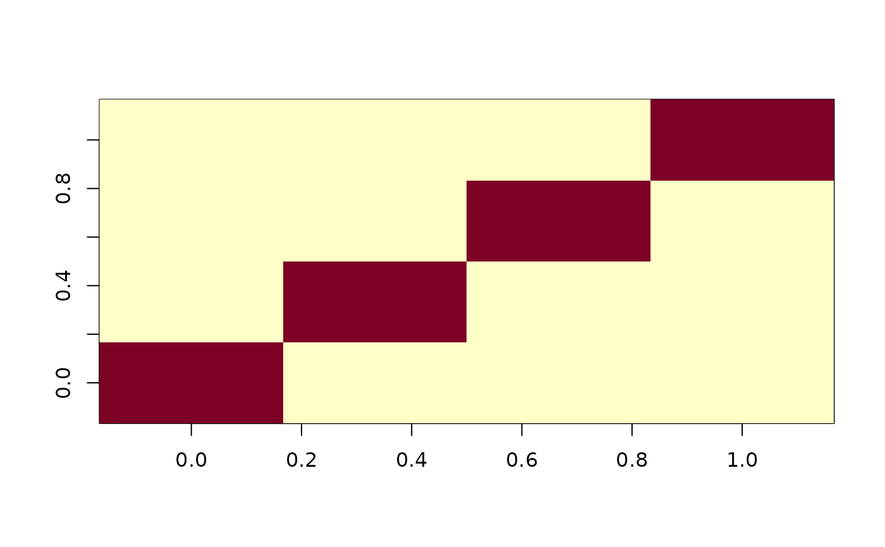

Compound symmetry matrix
CSmat.RdCreates a compound symmetry matrix with parameters specified.
Details
Specially useful for constructing covariance structures for rows and ranges to capture better the spatial variation trends in the field. The rho value is assumed fixed and values of the variance component will be optimized through REML.
References
Covarrubias-Pazaran G (2016) Genome assisted prediction of quantitative traits using the R package sommer. PLoS ONE 11(6): doi:10.1371/journal.pone.0156744
See also
The core function of the package mmer
Examples
x <- 1:4
R1 <- CS(x,rho=.25)
image(R1)
